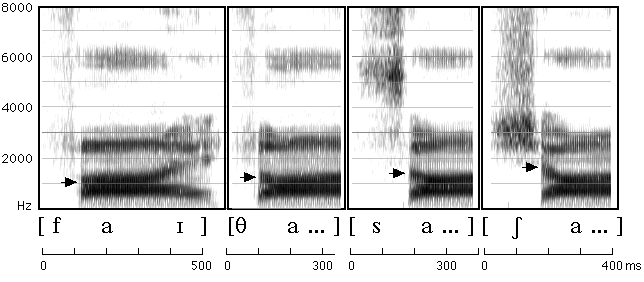

Return to chapter 8 contents page
Figure 8.9

Figure 8.9 A spectrogram of fie, thigh, sigh, shy. The frequency scale goes up to 8,000 Hz in this figure. The arrows mark the onsets of the second formant transitions. Only the first word is shown in full. The second part of the diphthong has been deleted for the other words.